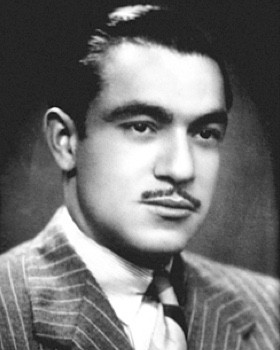
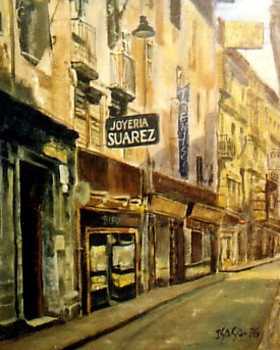
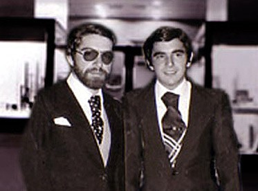
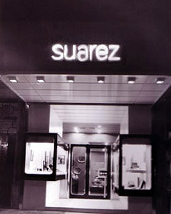
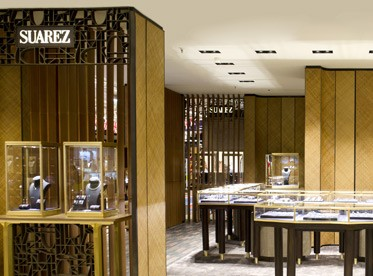

Nuestra Historia
D. Emiliano Suárez Faffián introdujo un gran avance en el gremio de joyeros fundando en Bilbao la primera tienda-taller de joyería, origen de lo que es hoy Grupo Suárez.
Fundación de Joyería Suárez (Bilbao, Calle Jardines 11)
Era una pequeña tienda de unos 20 metros cuadrados que puso en marcha el proyecto de la familia Suárez.
1974 Fallecen en accidente el señor Suárez y su esposa Sara.
Los jóvenes hermanos Benito y Emiliano adquieren toda la responsabilidad del negocio familiar.
Hoy en día, la marca es sinónimo de elegancia y prestigio, contando con múltiples sucursales y una clientela fiel que confía en la excelencia de sus productos.
1978 Inauguración tienda (Bilbao, Calle Correo, 21)

Los hermanos Suárez deciden cerrar la primera tienda que fundó su padre para poner en marcha un nuevo proyecto.
1982 Apertura de la primera tienda en Madrid. (Madrid, Calle Serrano, 63).

Los hermanos Suárez extienden su proyecto a Madrid inaugurando una tienda en la calle Serrano 63..
2004 Príncipes de Asturias

Suárez tuyo el honor de ser la joyería elegida por SS.AA.RR los Príncipes de Asturias para comprar sus joyas de compromiso.
2015 Nuevo concepto tienda

Tras la presentación del proyecto en un concurso entre varios arquitectos internacionales del más alto nivel, Suárez selecciona el proyecto de un prestigioso estudio parisino y comienza su ejecución bajo la dirección del estudio G4 basado en Barcelona y liderado por el arquitecto Ernest Boronat. Un nuevo concepto de tienda basado en espacios abiertos donde la luz y materiales como la rafia, el cuero y latón son los protagonistas.